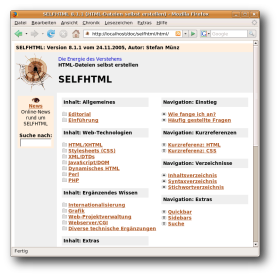

SELFHTML
Dieser Artikel wurde für die folgenden Ubuntu-Versionen getestet:
Ubuntu 16.04 Xenial Xerus
Ubuntu 14.04 Trusty Tahr
Zum Verständnis dieses Artikels sind folgende Seiten hilfreich:
SELFHTML  ist eine umfangreiche Dokumentation zur Webentwicklung. Das Projekt dient Anfängern mit Tutorials zu Themen wie HTML, CSS (Cascading Stylesheets) und Javascript. Außerdem dienen die Kurzreferenzen, Stichwort- und Syntax-Verzeichnisse auch als Nachschlagewerk für erfahrene Webdesigner. Durch ergänzende Bemerkungen, Artikel und Beispiele ist es ein sehr solides Werk zu diesem Thema und einzigartig im deutschen Sprachraum.
ist eine umfangreiche Dokumentation zur Webentwicklung. Das Projekt dient Anfängern mit Tutorials zu Themen wie HTML, CSS (Cascading Stylesheets) und Javascript. Außerdem dienen die Kurzreferenzen, Stichwort- und Syntax-Verzeichnisse auch als Nachschlagewerk für erfahrene Webdesigner. Durch ergänzende Bemerkungen, Artikel und Beispiele ist es ein sehr solides Werk zu diesem Thema und einzigartig im deutschen Sprachraum.
Die letzte Version 8.1.2 stammt vom 01.03.2007 und ist damit nicht mehr taufrisch. Anfang 2010 wurde entschieden, das Projekt als Wiki weiterzuführen. Dieses enthält Informationsquellen speziell zu HTML5, CSS3 und modernem JavaScript. Eine Offline-Version des Wikis ist in Vorbereitung.
Installation¶
Für Ubuntu gibt es praktischerweise ein Programmpaket, das man einfach über die Paketverwaltung installieren kann. Inhaltlich geht es hauptsächlich um HTML 4 (und älter). Folgendes Paket stellt die SELFHTML-Dokumentation bereit [1]:
selfhtml (multiverse)
 mit apturl
mit apturl
Paketliste zum Kopieren:
sudo apt-get install selfhtml
sudo aptitude install selfhtml
Benutzung¶

Lokal¶
Nach der Installation des Paketes kann man SELFHTML direkt von der Festplatte in einem Webbrowser öffnen. Die Dokumentation wird unter /usr/share/doc/selfhtml/html/ abgelegt. Die HTML-Datei index.htm ist die Startseite der Dokumentation.
Man findet die Dokumentation also unter file:///usr/share/doc/selfhtml/html/index.htm.
Webserver¶
Alternativ kann man auch einen Webserver installieren. So bieten beispielsweise Apache und lighttpd die Freigabe des Verzeichnisses /usr/share/doc an. Nach der Aufhebung der IP-Beschränkung (beschrieben in den jeweiligen Artikeln), steht SELFHTML auch anderen Rechnern im lokalen Netzwerk zur Verfügung. Die SELFHTML-Dokumentation ist dann unter
http://<serverip>/doc/selfhtml/html/
aufrufbar. Will man SELFHTML nur auf dem eigenen Rechner benutzen, so ist die Installation eines Webservers nicht notwendig.
Links¶
Webentwicklung
 Übersichtsartikel
Übersichtsartikel
HTML5¶
HTML5-Handbuch
von Stefan MünzFünfte Dimension – Interessante Tools für HTML5-Entwickler
- LinuxUser, 08/2012Dive Into HTML5
 - viele Praxisbeispiele
- viele PraxisbeispieleQuirksMode.org
- Kompatibilitäts-Tabellen für Webbrowser
- Erstellt mit Inyoka
-
 2004 – 2017 ubuntuusers.de • Einige Rechte vorbehalten
2004 – 2017 ubuntuusers.de • Einige Rechte vorbehalten
Lizenz • Kontakt • Datenschutz • Impressum • Serverstatus -
Serverhousing gespendet von